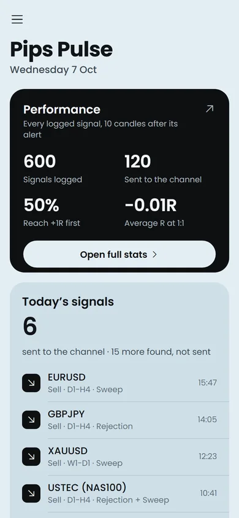
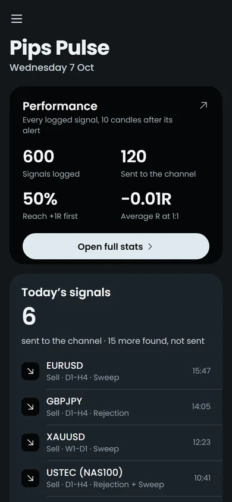
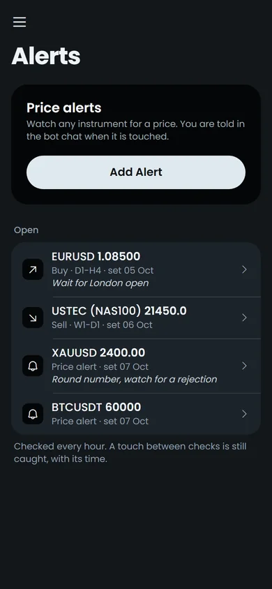
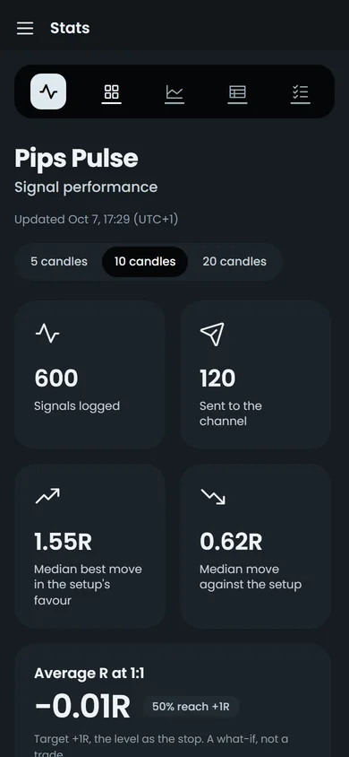

Pips Pulse
BUY EURUSD
- Range:
- Bullish |
1.10655-1.20823| W1 - Rejection:
- V-Shape | Wed 14 Oct |
1.11551 - Breakout:
- External | Thu 15 Oct 02:00 |
1.12091
EURUSD-D1H4-151026-0400
Set entry alert
Trade alerts on Telegram
Pips Pulse scans up to 44 forex, metals, index, energy and crypto markets every hour. When a higher-timeframe level holds and a lower-timeframe breakout follows, the setup lands in Telegram with every level you need to judge it.
Pips Pulse
BUY EURUSD
1.10655 - 1.20823 | W11.115511.12091EURUSD-D1H4-151026-0400
Set entry alert
Pips Pulse
BUY EURCAD
1.59038 - 1.62704 | W11.587131.59184EURCAD-D1H4-151026-0400
Set entry alert
What it takes off your plate
You can't watch every chart.
The scanner checks every market on its list each hour and only posts when a setup completes.
Setups form while you sleep or work.
Alerts fire on closed candles at any hour, with the range, trigger and breakout levels attached.
News moves price without warning.
A news brief arrives on Sunday evening for the week ahead, on weekday evenings for the next day, and as a reminder each weekday morning.
Signal groups rarely show their record.
Every signal is logged and scored against what price did next, and the results sit on a public stats page.
How it works
The scanner looks for a single, precisely defined pattern. It follows a written rulebook to the letter, so every alert can be traced back to a rule.
01 · Higher timeframe
Price rejects a Key Level, with the level in the candle's wick, or sweeps a prior high or low.
02 · Lower timeframe
Price then closes through structure in the new direction. By default, only a full external breakout counts.
03 · One timeframe higher
The setup is read against the structure above it, so each alert says whether it trades with the range or against it.
Each pairing is checked right after the candle that confirms it closes, on each market's own session clock, with daylight saving handled.
Reading an alert
Features
Every event likely to cause a sharp move: high-impact releases, bank holidays, central bank speeches and press conferences, testimony, G7 and G20, OPEC, elections and tariff news. It arrives as one image, so you can read it at a glance.
Every setup carries a "Set entry alert" button. Send the price you marked, and you're told when price reaches it.
Type /alert gold, pick the instrument and send a price. Alerts are checked against 5-minute candles, so a touch between checks is still caught, wicks included.
Scenarios, pairings, markets, models and breakout types can each be switched on or off from the bot or the app, and the next scan follows them.
The app
The Pips Pulse app opens on a dashboard with today's signals, the alerts waiting and a performance summary. From there you can add, edit or cancel alerts, change every setting from the bot, and read the full stats.



App screens show sample data.
Track record
Each logged signal, sent or not, is measured in R after 5, 10 and 20 candles of its breakout timeframe. 1R is the distance from the alert to the setup's own level.
Open the Stats Page
These numbers show how price moved after each alert. Entry, stop and target are left to you, so they can't show trading profit. The stats screen above shows sample data, and the live numbers are on the stats page.
FAQ
No. It finds setups and sends alerts, and it never connects to a broker account. A version where you approve an order with one tap in Telegram is on the roadmap.
It helps. Each alert gives the range, the trigger level and the breakout level. Entry, stop and target are yours to choose for now.
Each pairing is checked right after the candle that confirms it closes, so a completed setup is posted within that hourly scan.
Up to 44 markets across forex, metals, indices, energies and crypto, on four pairings from Monthly → Weekly down to 4-hour → 1-hour.
Alerts arrive wherever you use Telegram. The app installs on Android, iPhone, Windows and Mac, and also opens inside Telegram.
No. Alerts are information. You decide whether and how to trade them.
Join 600+ traders who get Pips Pulse setups on Telegram.
Join the Channel